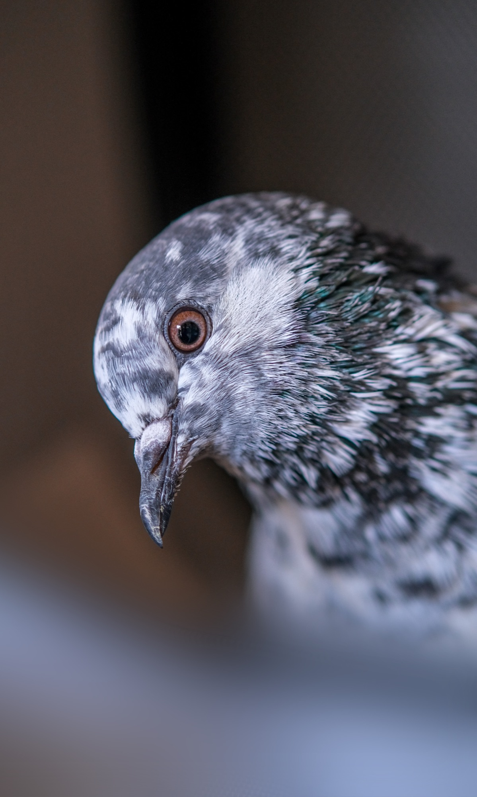

Petition an Stadtrat und Grossen Stadtrat Luzern
Für ein tiergerechtes Stadttaubenmanagement in Luzern
Luzern braucht eine nachhaltige Lösung, die Mensch, Tier und Stadt gleichermassen gerecht wird.
Petition unterschreibenDie Ausgangslage
Luzern hat zwei Taubenschläge – doch ein nachhaltiges Stadttaubenmanagement fehlt.
In der Stadt leben nach Schätzungen der Behörden rund 2'000 bis 3'000 Stadttauben. Die beiden bestehenden Taubenschläge bieten lediglich Brutplätze für insgesamt rund 180 Paare und erreichen damit nur einen kleinen Teil der Population.
Entscheidend ist zudem: Eine artgerechte Fütterung findet in den Schlägen nicht statt. Damit fehlt ein zentraler Mechanismus, um die Tauben dauerhaft an die Schläge zu binden. Die Tiere suchen weiterhin im öffentlichen Raum nach Nahrung und brüten an Gebäuden, auf Balkonen und an anderen unkontrollierten Standorten.
Zwei Taubenschläge allein sind noch kein Stadttaubenmanagement. Ohne ein aufeinander abgestimmtes Gesamtkonzept bleiben Verschmutzung, Konflikte und Tierleid bestehen.
↑ Nach obenWarum es nicht reicht
2'000–3'000
Stadttauben leben nach Schätzungen der Behörden in Luzern.
180 Paare
finden in den bestehenden Taubenschlägen Brutplätze.

Die Lösung
Betreute Taubenschläge statt Symptombekämpfung.
Ein nachhaltiges Stadttaubenmanagement setzt dort an, wo die Tiere leben und brüten. In betreuten Taubenschlägen werden die Tauben artgerecht gefüttert, medizinisch überwacht und dauerhaft an einen kontrollierten Standort gebunden.
Weniger Kot auf Gebäuden und Plätzen, weniger Konflikte und gesündere Tiere.
01
Tauben gezielt binden
Artgerechte Fütterung bindet die Tiere dauerhaft an die Taubenschläge.
02
Population regulieren
Eier werden konsequent gegen Attrappen ausgetauscht.
03
Konflikte reduzieren
Ein grosser Teil des Kots fällt dort an, wo die Tauben betreut werden.
Warum Fütterung dazugehört
Ohne Fütterung fehlt die Bindung.
Betreute Taubenschläge funktionieren nicht allein durch das Bereitstellen von Brutplätzen. Eine kontrollierte und artgerechte Fütterung ist ein zentraler Bestandteil des Konzepts.
Werden die Tauben im Schlag gefüttert, verbringen sie einen grossen Teil ihrer Zeit dort. Sie müssen weniger im öffentlichen Raum nach Nahrung suchen und können gezielt an die betreuten Standorte gebunden werden.
Genau diese Bindung schafft die Voraussetzung dafür, Eier konsequent gegen Attrappen auszutauschen und einen grossen Teil des Kots dort aufzufangen, wo er kontrolliert entfernt werden kann.
Unsere Petition
Was wir fordern.
01
Bestehende Taubenschläge weiterentwickeln
Die bestehenden Taubenschläge sollen nach den Grundsätzen eines nachhaltigen und tiergerechten Stadttaubenmanagements betrieben werden.
02
Artgerechte Fütterung sicherstellen
Eine kontrollierte und artgerechte Fütterung soll die Tauben dauerhaft an die betreuten Schläge binden.
03
Weitere Taubenschläge schaffen
Das Angebot an betreuten Taubenschlägen soll schrittweise erweitert und an die Grösse der Luzerner Taubenpopulation angepasst werden.
04
Bestände tierschutzgerecht regulieren
Durch den konsequenten Austausch von Eiern gegen Attrappen soll die Population langfristig und tierschutzgerecht stabilisiert werden.
Jetzt mitmachen
Gib den Luzerner Stadttauben deine Stimme.
Unterstütze unsere Petition für ein nachhaltiges und tiergerechtes Stadttaubenmanagement in Luzern.
Petition unterschreiben ↑ Nach obenSEKTION LUZERN
Wer wir sind
Wir sind die Sektion Luzern von Stadttauben Schweiz. Seit unserer Gründung im Jahr 2025 engagieren wir uns für einen tiergerechten und nachhaltigen Umgang mit Stadttauben. Mit Aufklärungsarbeit und politischem Engagement setzen wir uns für ein zeitgemässes Stadttaubenmanagement in Luzern ein.

Livia

Charlotte

Debby